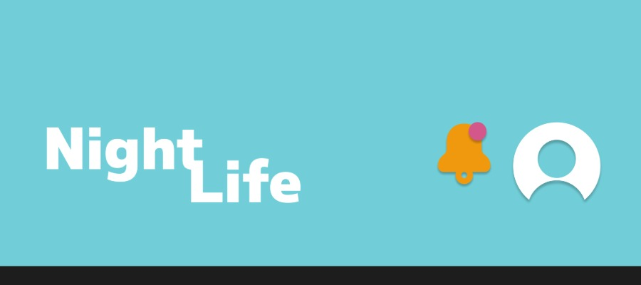
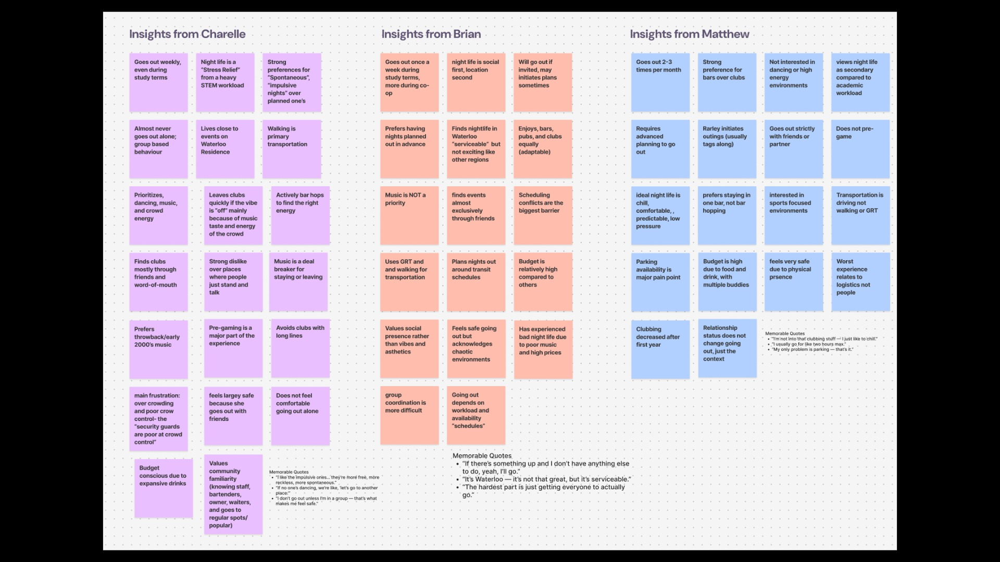
Insightful
Interviews
My outdoor perspective was influence by one of my adored childhood films "Alice in Wonderland". The tales where psychedelic imagination becomes a childs playground full of twisted beings and environments that might cause a child to fright or freeze. In my world the crops can talk, the pumpkins can play, and the weather can start snowing with sugar cube residue falling from the sky. Perhaps the dream is from a foodie, or maybe they despise vegetables but in world as uncertain a "Tea Timeville"the world is scrambled with unsolved mysteries. the drawing istelf was a challenge as curved objects like msuhrooms and teapots are moreso avoided in perspective, more complexity and time to imagine their phsyical atmosphere. Nevertheless, in a world such as Tea Timeville the world can be as unproportional and dysfigured as much as it likes. It's when perfection kills the ignorance and becomes an inescapable reality.
Iteration
Grouping
In my indoor perspective I applied a silly twist as not often you see cartoons or storyboards at the morgues, usually people find them unsettling but in one of my ideas of short-films I wanted to reveal a small morgue character that doesn't neccessarily understand the concept of death as he is...wide awake and full of curiousity around such a delicate facility. His name is Tim, Tim as you can imagine in this scene is about to scare one of the poor older fellas that have been employed at the morgue for years, perfecting his craft t'ill he sees what science taught him to be the imaginable throughout his entire carrer, a second chance at life. Creating this enviornment took just as much time as the intricate details of medical tooks and storage cabins for all the personnas that lurk on the sidelines deserved just as much attention as the main plot. If I had the oppourtunity to make film I would let all the background characters have a story of their own to tell even in the after life.
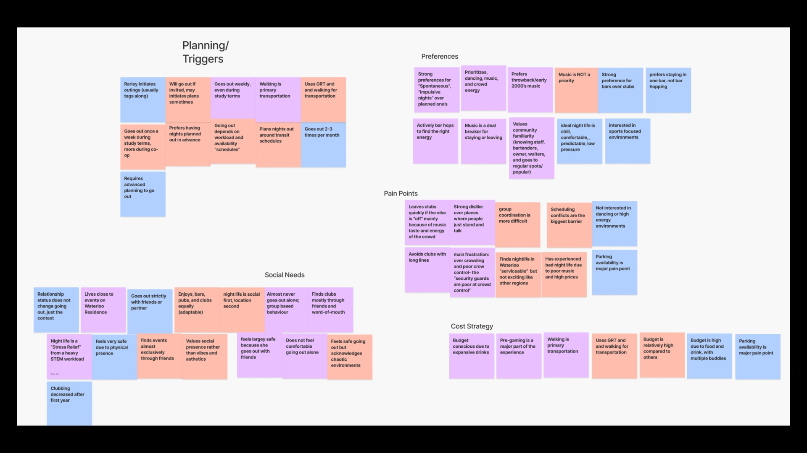
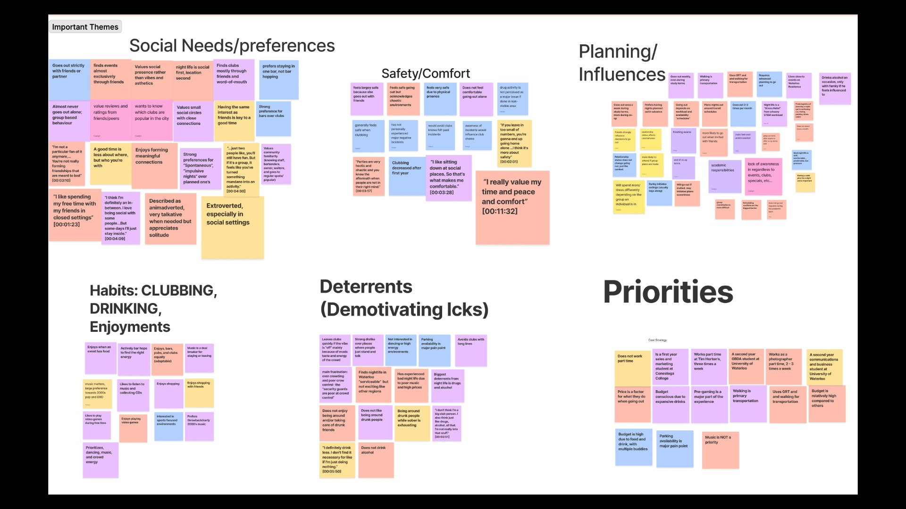
Quick Time Anatomy 60 seconds
This drawing focused on quick gesture and proportion through timed observation.
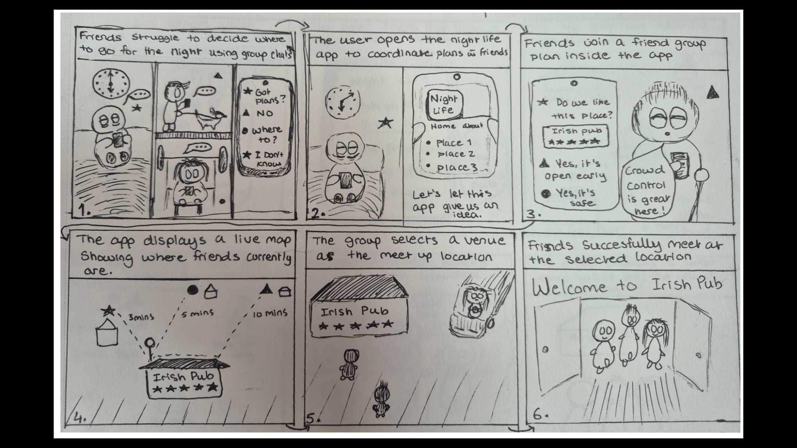
Quick Time Anatomy 30 seconds
This study explored motion and balance using fast sketching techniques.
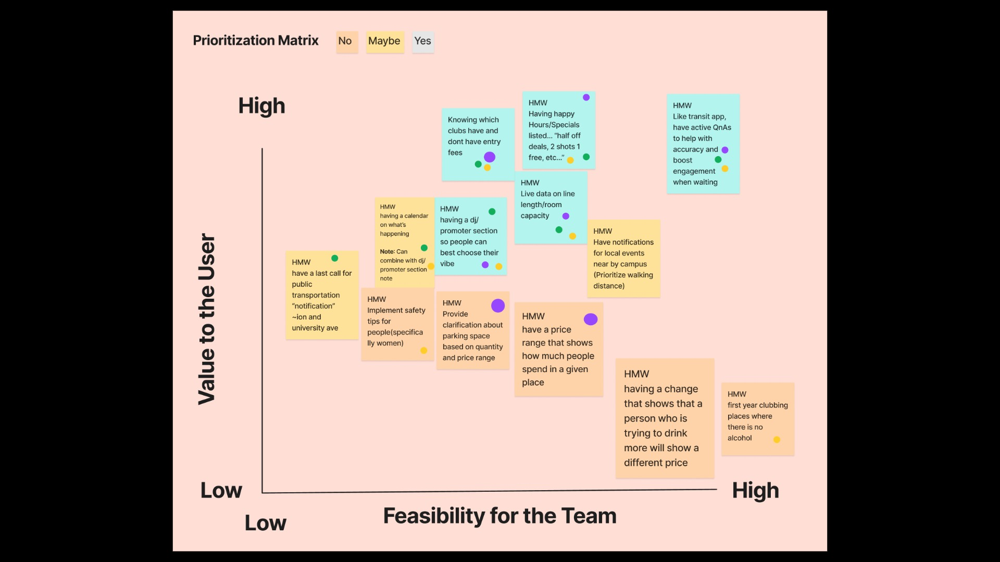
Quick Time Anatomy 60 seconds
This sketch emphasized line confidence, structure, and expressive form.
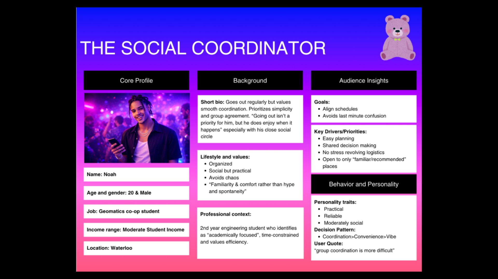
Quick Time Anatomy 60 seconds
This drawing focused on quick gesture and proportion through timed observation.
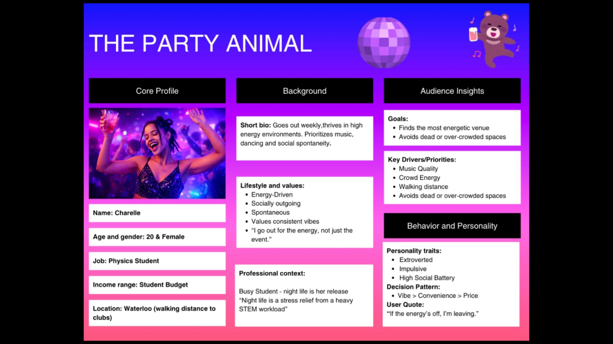
Quick Time Anatomy 30 seconds
This study explored motion and balance using fast sketching techniques.
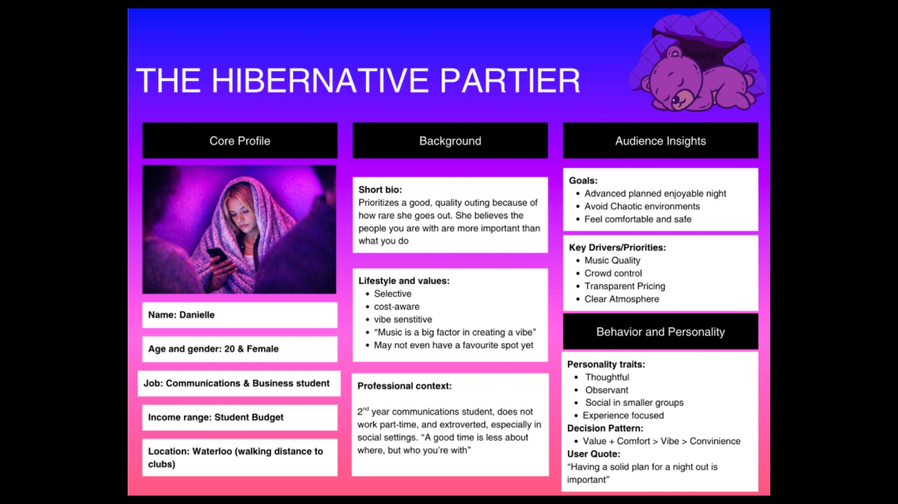
Quick Time Anatomy 60 seconds
This sketch emphasized line confidence, structure, and expressive form.
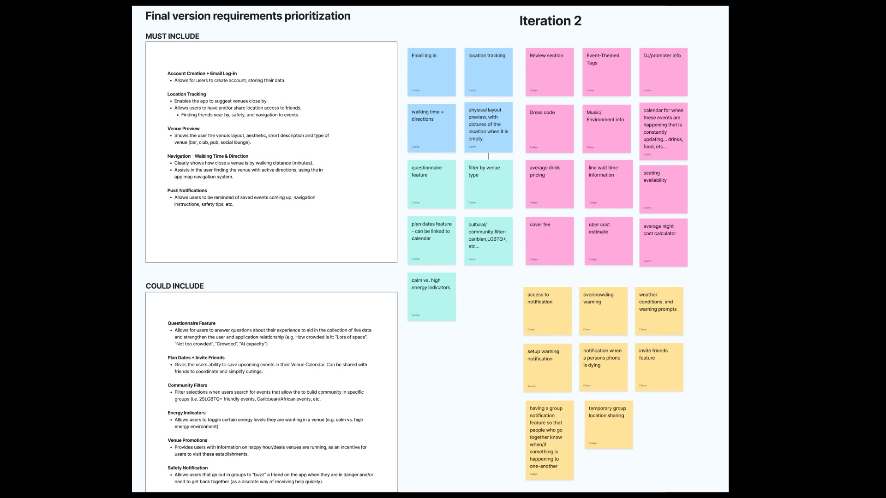
Bubble Painting
My bubble painting originated back in highschool. I still value this petite 2X2 inch peice because it was the beginning of my journey of finding myself through self expression painting. As you can tell i'm not a huge fan of realism, I much prefer abstract surrealism because theres a deeper story told than just what meets the eye and metaphors can be more creative. One of my main influencers were Marc Chagall ; a jewish painter that prioritized expressionism in his art. For me this bubble was a symbol of my narrowmindedness thinking I had limited freedom due to circumstances in my homelife. For example, having take-out for lunch felt rebellious and having close friends had to be a secret kept from parental ears. These restrictions made me feel like the simple freedoms were nearly unreachable. But in reality it was simply a mindset, beyond the darkness there are clouds, dreams, oppourtunities to be discovered. It's a painting I often come back to more and more as I develop myself as an adualt trying my best to drift myself away from the restricted child with no personal opinions to an artist who can express to the whole world in confidence who she is.
The Cheesecake
The cheese was a sculpture I made in high school that carried more meaning than my simple dislike for its taste. It became a way to process what birthdays felt like growing up. They were never really about celebrating me, but instead centered around my dad—what he wanted to eat, where he wanted to go, and how he wanted the day to unfold.
I remember wanting small things, like seeing my friends or choosing a cake I actually liked, but even those choices didn’t feel like mine. There were years spent going on trips I didn’t ask for, eating flavors I didn’t enjoy, and receiving gifts that felt disconnected from who I was. Over time, those moments built into something larger—where expressing what I liked or cared about didn’t feel safe to share.
Because of that, I learned to keep parts of myself private. The sculpture reflects that shift. The knife cutting off the tongue, placed beside a candle, represents another year of silence—being present, but not truly heard.
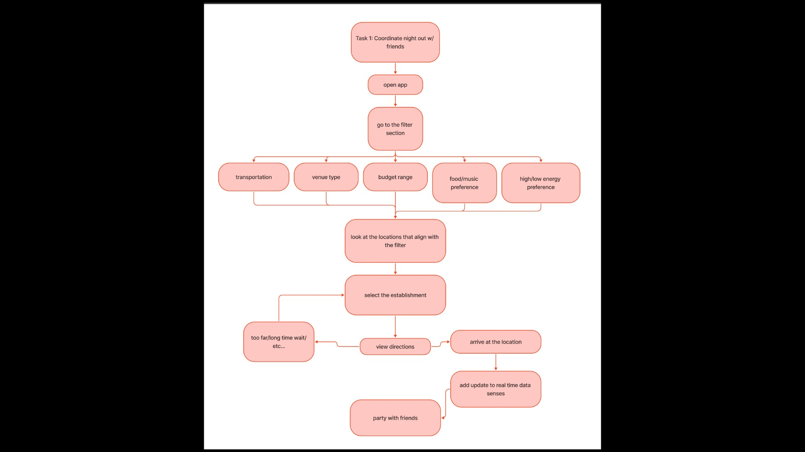
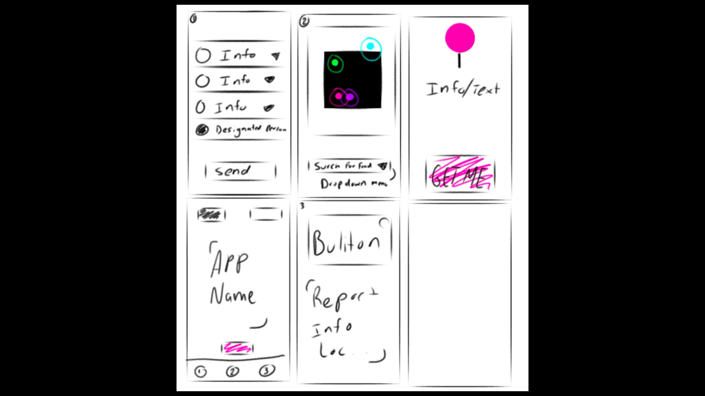
My First StoryBoard
My first story board was when I discovered how complicated it was to describe a direct beggining, middle and end without words. In the requirements for applying to Sheridan College they provide a character of a fox and ask you to make a story out him with 4 pannels; an introduction, the problem, the solution, and conclusion. But the trick to this was the story had to be fluent enouph to the viewer that they can intrepet the story without words. Therefore, I started a simple scenario of the fix liking a penguin since Valentine's was coming up and it was a simple way to also demonstrate use of foreground, middle ground and background to the story. He starts off with a bouquet, gets nervous when seeing a crowd will also be witnessing his attempt to ask the penguin out, maybe also worried to get a laugh or two if rejected. As he walks up the penguin, the climax becomes the shock of the crowd and the conclusion was a happy ending. This was a lot harder than it looks because it took time to come up with the story line, characters and postioning of where the angle of the camera /viwer sees the story unravelling.
Hand Drawn Animation
The walkie talkie was one of the most challenging tasks i've ever done in my hsitory of projects. This was an application for Sheriden College Animation and they offered the options of digital or hand drawn. I decided to go for hand drawn to text my own ability in understanding flow and character. I started off giving the little guy a story to his ridged personna; I used his attena to show expressions and physical postures of sadness, defeat and giving up till he trips and stumbles upon his own attena and lands with grace displaying how theres a start and end to all aspects of life including the sad side. This project required 30-40 frames of pages stacked on top of each paper and one by one I would do about 6 frames per day landing out the actions, measurements and sketching this expressive little fella. Unfortunatly, I wasn't accepted into Sheridan College with this animation but I was still proud of myself carried my skills forward in GBDA applying narrative design in all my work i've come across to the best of my abilities.
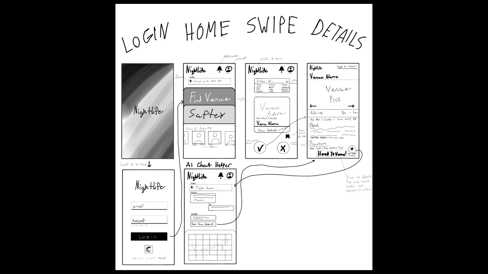
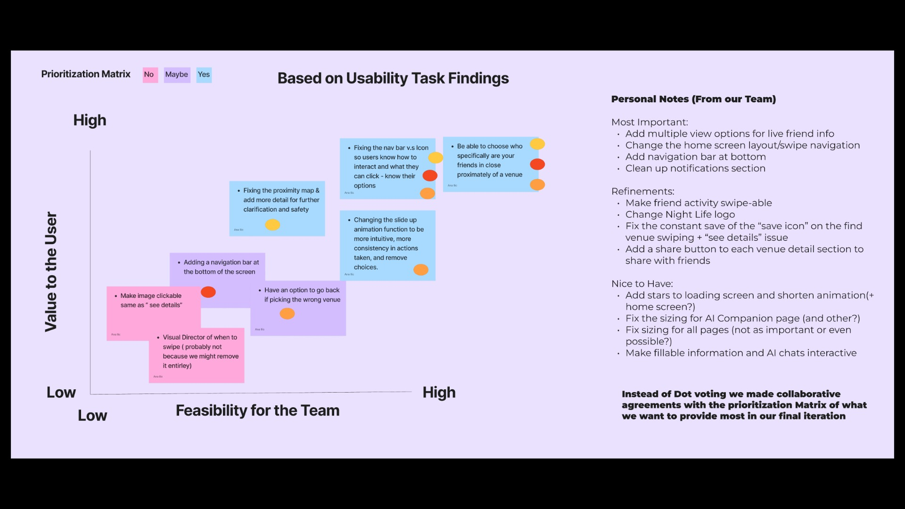
My First StoryBoard
My first story board was when I discovered how complicated it was to describe a direct beggining, middle and end without words. In the requirements for applying to Sheridan College they provide a character of a fox and ask you to make a story out him with 4 pannels; an introduction, the problem, the solution, and conclusion. But the trick to this was the story had to be fluent enouph to the viewer that they can intrepet the story without words. Therefore, I started a simple scenario of the fix liking a penguin since Valentine's was coming up and it was a simple way to also demonstrate use of foreground, middle ground and background to the story. He starts off with a bouquet, gets nervous when seeing a crowd will also be witnessing his attempt to ask the penguin out, maybe also worried to get a laugh or two if rejected. As he walks up the penguin, the climax becomes the shock of the crowd and the conclusion was a happy ending. This was a lot harder than it looks because it took time to come up with the story line, characters and postioning of where the angle of the camera /viwer sees the story unravelling.
Hand Drawn Animation
The walkie talkie was one of the most challenging tasks i've ever done in my hsitory of projects. This was an application for Sheriden College Animation and they offered the options of digital or hand drawn. I decided to go for hand drawn to text my own ability in understanding flow and character. I started off giving the little guy a story to his ridged personna; I used his attena to show expressions and physical postures of sadness, defeat and giving up till he trips and stumbles upon his own attena and lands with grace displaying how theres a start and end to all aspects of life including the sad side. This project required 30-40 frames of pages stacked on top of each paper and one by one I would do about 6 frames per day landing out the actions, measurements and sketching this expressive little fella. Unfortunatly, I wasn't accepted into Sheridan College with this animation but I was still proud of myself carried my skills forward in GBDA applying narrative design in all my work i've come across to the best of my abilities.
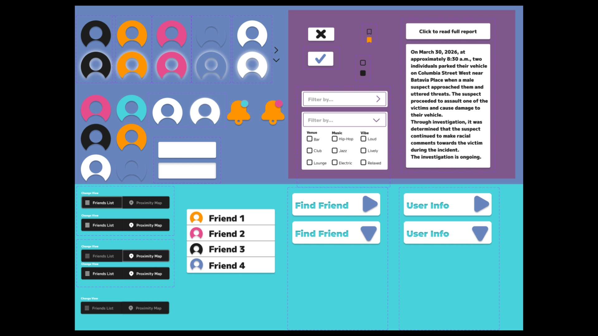
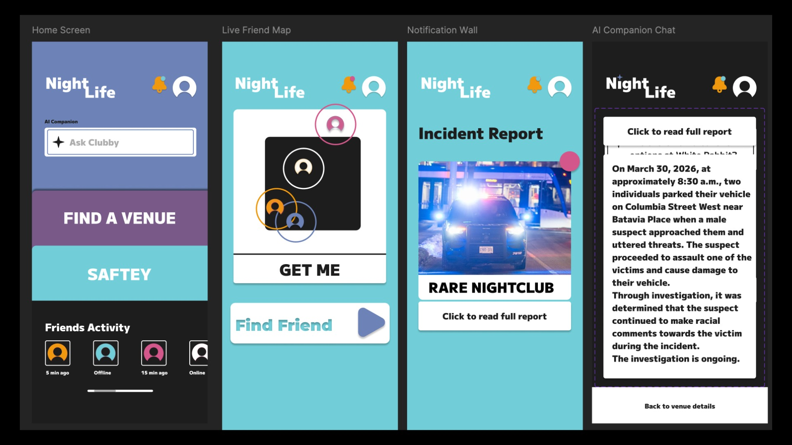
My First StoryBoard
My first story board was when I discovered how complicated it was to describe a direct beggining, middle and end without words. In the requirements for applying to Sheridan College they provide a character of a fox and ask you to make a story out him with 4 pannels; an introduction, the problem, the solution, and conclusion. But the trick to this was the story had to be fluent enouph to the viewer that they can intrepet the story without words. Therefore, I started a simple scenario of the fix liking a penguin since Valentine's was coming up and it was a simple way to also demonstrate use of foreground, middle ground and background to the story. He starts off with a bouquet, gets nervous when seeing a crowd will also be witnessing his attempt to ask the penguin out, maybe also worried to get a laugh or two if rejected. As he walks up the penguin, the climax becomes the shock of the crowd and the conclusion was a happy ending. This was a lot harder than it looks because it took time to come up with the story line, characters and postioning of where the angle of the camera /viwer sees the story unravelling.
Hand Drawn Animation
The walkie talkie was one of the most challenging tasks i've ever done in my hsitory of projects. This was an application for Sheriden College Animation and they offered the options of digital or hand drawn. I decided to go for hand drawn to text my own ability in understanding flow and character. I started off giving the little guy a story to his ridged personna; I used his attena to show expressions and physical postures of sadness, defeat and giving up till he trips and stumbles upon his own attena and lands with grace displaying how theres a start and end to all aspects of life including the sad side. This project required 30-40 frames of pages stacked on top of each paper and one by one I would do about 6 frames per day landing out the actions, measurements and sketching this expressive little fella. Unfortunatly, I wasn't accepted into Sheridan College with this animation but I was still proud of myself carried my skills forward in GBDA applying narrative design in all my work i've come across to the best of my abilities.
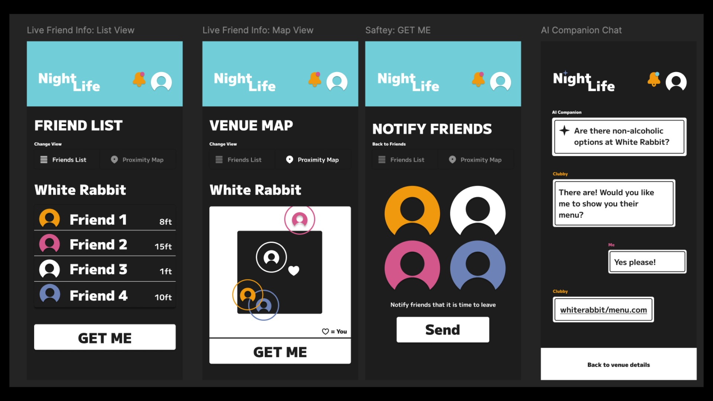
Want to explore more? View full project breakdowns and extended work below.